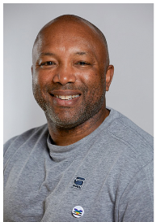

Dierentehuis Den Bosch
|
Hoi ik ben Peter van Oirschot! Ik ben de eigenaar van Dierentehuis den bosch. Ik ben 58 jaar, en doe dit werk al 30 jaar! Je kan mij bereiken op: P.vanOirschot@DDB.nl |
|
|
Hoi ik ben Marloes van den Beek! Ik ben de secretaresse! Ik ben 27 jaar en doe dit werk al 4 jaar! Je kan mij bereiken op: M.vandenBeek@DDB.nl |
|
|
Hallo, ik ben Janiek Dijkstra! Ik ben de hoofd-secretaresse! Ik ben 31 jaar en werk hier al 7 jaar! Je kan mij bereiken op: J.Dijkstra@DDB.nl |
|
|  |
Hallo ik ben Danny van de Beek! Ik ben de dierenarts! Ik ben 45 jaar en werk hier al 16 jaar! Je kan mij bereiken op: D.vandeBeek@DDB.nl |
Oosterplasweg 41
5215 HT ’s-Hertogenbosch
info@dierentehuisdenbosch.nl
073 641 24 17